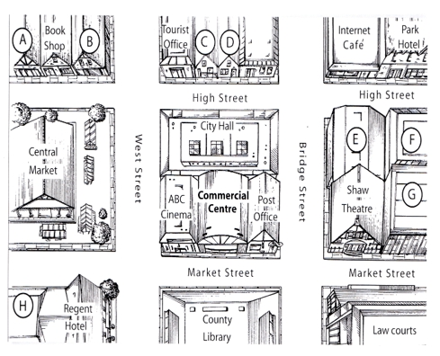
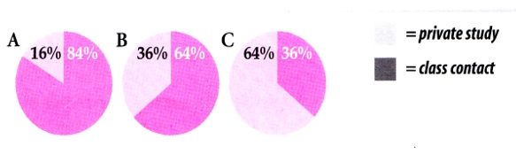
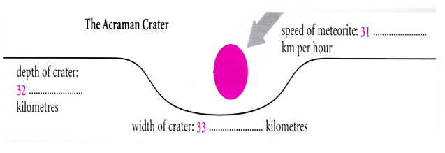

Answer the questions below.
Write NO MORE THAN THREE WORDS for each answer.
Example Passport
Complete Keith’s notes below.
Write NO MORE THAN TWO WORDS AND/OR A NUMBER for each answer.
Match the places in Questions 8-10 to the appropriate letters A-H on the map

Questions 11 - 14
Complete the sentences below.
Use NO MORE THAN THREE WORDS AND/OR A NUMBER from each answer.
Complete the notes below
Write NO MORE THAN THREE WORDS for each answer.
Arrive no more than 15 before the time of the interview.
After you hear the question, you can 16 before you reply.
You can 17 if you don’t understand what they’re asking you.
Wait for them to offer you the job before you say what 18 you want.
Learning from the experience will make you more 19 in future interviews.
Pay attention to your 20 – it shows you have a positive attitude.

SECTION 4 QUESTIONS 31 - 40
Label the diagram. Write NO MORE THAN TWO WORDS AND/OR A NUMBER for each answer

Choose from letters A-C and write them on your answer sheet.
34 The crater at Acraman is
35 Williams realized what had happened at Acraman when he
36 Where was rock from Acraman found?
Write NO MORE THAN THREE WORDS for each answer.